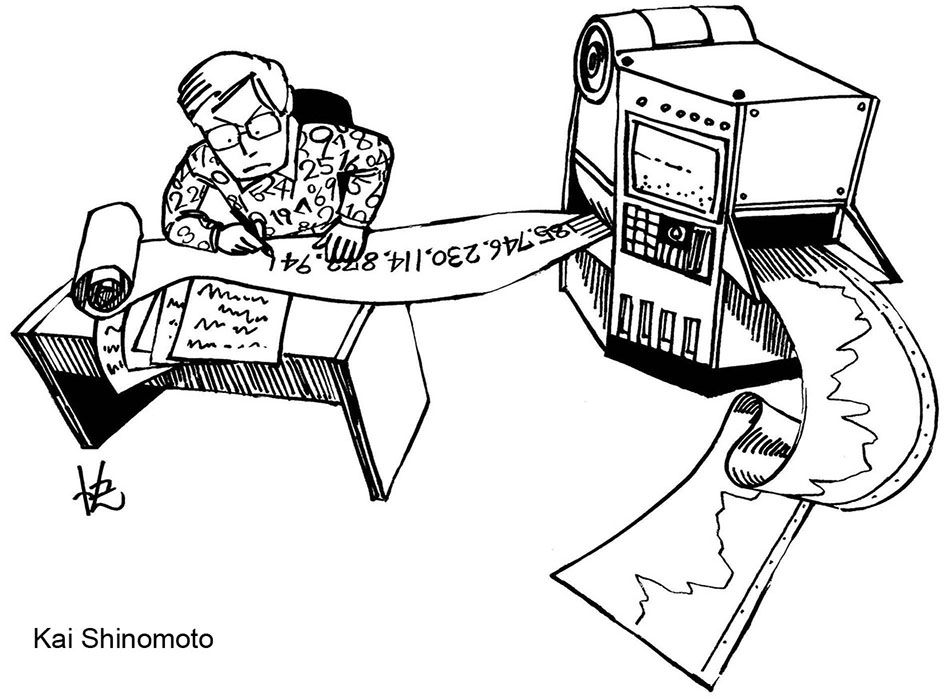

| Toolbox for constructing the best histograms | Tweet |
| These tools provide the best histogram, kernel density estimation, Bayesian estimator, and Hidden Markov model, for a given series of event times. Paste or upload the event times, listed in order of increasing time, separated by a comma or a space. Your data will not leave your computer, because the computation is carried out on your computer. Matlab, Python, and R codes are also available. The theory applied here for the purpose of optimizing the estimators can be found in the references. |
|  |
| For assistance, contact Shigeru Shinomoto, who directed this project. Individual programs were formulated by Hideaki Shimazaki, Takahiro Omi, Takeaki Shimokawa, and Yasuhiro Mochizuki. Revisions were made by Junpei Naito, Kazuki Nakamura, and Daisuke Endo. |